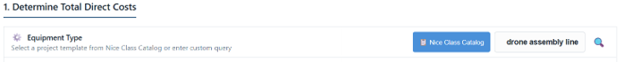
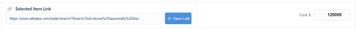

Добро пожаловать в АСУИР Gemini - генератор сверхэффективных производств
Алгоритмы экономики платформы АСУИР Gemini идентичны везде – в любой стране: Цены произведенной продукции: уровень Бангладеш + Зарплата наемного рабочего: $10,000 / мес + доход предпринимателя: $100к – $1,000к / мес.
При этом предпринимателю нет необходимости работать самому – в расчетах заложена оплата наемного персонала на уровне $10,000 / мес каждому.
Система позволяет спроектировать производства, обеспечивающие:
- Экспоненциальный рост: экспоненциальный экономический рост ($100,000 - $1,000,000 /мес) домохозяйств, за счет производства и продажи любой готовой продукции.
- Ликвидацию бедности во всех странах, за счет:
- увеличения зарплаты наемного персонала до уровня Швейцарии - $10,000 / месяц;
- Экспоненциального предпринимательского дохода - $100,000 - $1,000,000 / месяц;
- Стоимости производимой продукции на уровне Бангладеш.
🏛 Пример - проектирование производства телевизоров
Настройка сверхэффективной конфигурации производственной линии. Она осуществляется в полуавтоматическом режиме, с помощью искусственного интеллекта – Gemini, в том числе с использованием каталога МК.
Раздел 1: Прямые затраты на оборудование, аренду и оплату труда
В этой секции аккумулируются все постоянные операционные расходы предприятия за один рабочий день:
- Аренда помещения (в месяц)
- Количество наемного персонала
- Зарплата на единицу персонала в месяц
1/ Выбор функций производственной линии: в разделе 1 просто укажите функции производственной линии, которую вы предполагаете построить, например, «автоматизированная линия производства дронов».

2/ Выбор необходимого оборудования: в разделе 1 выберите необходимое оборудование, разместив ссылку и стоимость оборудования в соответствующих текстовых блоках.

Раздел 3: Сырье и комплектующие
Выбор комплектующих: аналогично, выбору оборудования в разделе 1, выберите конкретный тип комплектующих.
Раздел 5: Предпринимательский доход и Масштабирование
В этом разделе отображается чистая прогнозируемая прибыль в месяц, а также срок окупаемости оборудования (ROI): за сколько дней чистая прибыль полностью покроет стоимость купленных вами станков
⚠️ Внимание! АСУИР Gemini — не средство получения сверхдоходов "из воздуха", а инструмент, показывающий КАК ИМЕННО это сделать математически – делай как я!
- Это, в первую очередь, нивелирование всех производственных расходов (стоимость станков, аренда, зарплаты), чтобы итоговая себестоимость продукции была не выше уровня Бангладеш.
- Как следствие, появляется возможность не работать самому (использовать труд роботов), выплачивая наемному персоналу зарплату на уровне Америки/Швейцарии — $10,000.
- Как следствие, возможность получения дохода домохозяйством в сотни тысяч в месяц.
- Как следствие, возможность резкого увеличения уровня жизни населения.
- Как следствие, возможность тестирования в 1 клик эффективности производства. К примеру, производить дорогие станки выгодно — прибыль более 1 миллиона в месяц! Однако производить их нужно минимум 25 штук в день, это требует квалификации и ангара. А вот выпускать дроны или бижутерию — требует лишь гаража. Платформа сразу покажет, что для окупаемости дронов нужно всего 54 штуки в день. Это превращает в ноль все операционные издержки.
Welcome to the Gemini Automated Production Management System, a generator of ultra-efficient production facilities
The economic algorithms of the Gemini ASUIR platform are the same everywhere, regardless of country Prices of manufactured goods: Bangladesh level + Wages for hired workers: $10,000 / мес + Entrepreneur’s income: $100к – $1,000к / мес.
At the same time, the entrepreneur does not need to work personally. The calculations include compensation for hired staff at a rate of $10,000 per month per employee.
The system enables you to design production facilities that offer the following:
- Exponential Growth: Exponential economic growth ($100,000–$1,000,000 per month) for households driven by the production and sale of finished goods.
- o Poverty can be eradicated in all countries by:
- Raising the wages of salaried employees to the Swiss level ($10,000 per month);
- Encouraging exponential entrepreneurial income ($100,000–$1,000,000 per month);
- Keeping production costs at the Bangladesh level.
🏛 Example: Designing a TV Manufacturing Facility
We are setting up a highly efficient production line configuration. This is done in semi-automatic mode using the Gemini artificial intelligence system and the MKTU catalog.
Section 1: Direct Costs for Equipment, Rent, and Labor
This section lists all of the company's fixed operating expenses for one business day.
- Depreciation expenses for equipment, based on its cost
- Number of employees
- Monthly salary per employee
1/ Selecting Production Line Functions In Section 1, specify the production line functions you plan to build. For example, you could specify "automated drone production line." Alternatively, you could use the MKTU catalog for this purpose.

2/ Select the necessary equipment: In Section 1, enter the link and price for each item in the corresponding text boxes to select the necessary equipment.

Section 3: Raw Materials and Components
Selecting Components: Follow the same procedure used to select equipment in Section 1. Select a specific type of component.
Section 5: Entrepreneurial Income and Scaling
This section displays the projected monthly net profit and the return on investment (ROI) of the equipment. The ROI is the number of days it will take for the net profit to cover the cost of the purchased machines.
⚠️ Attention! The Gemini Automated Production Management System is not a way to generate windfall profits "out of thin air," but rather a tool that shows exactly how to do so mathematically. Follow my lead!
- 1. First, offset all production costs (machinery, rent, and salaries) so the final production cost does not exceed Bangladesh's.
- 2. As a result, you can avoid working while paying employees salaries comparable to those in the U.S. or Switzerland—$10,000.
- 3. This enables a household to generate hundreds of thousands of dollars in monthly income.
- 4. This dramatically increases the population’s standard of living.
- 5. It also becomes possible to test production efficiency with a single click. For example, manufacturing expensive machine tools is profitable, yielding a profit of over $1 million per month. However, at least 25 units must be produced daily, requiring skilled labor and a hangar. But producing drones or costume jewelry requires nothing more than a garage. The platform will show you immediately that you only need to produce 54 drones a day to break even. This effectively eliminates all operating costs.